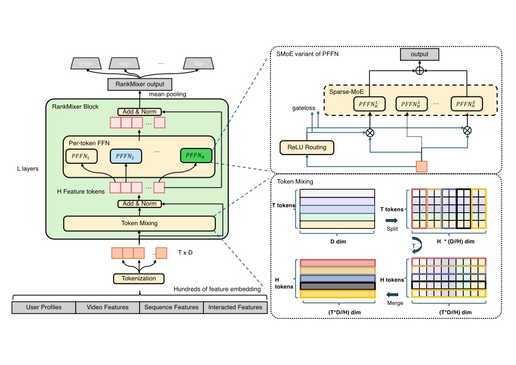
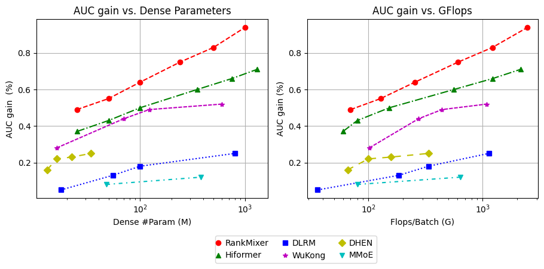
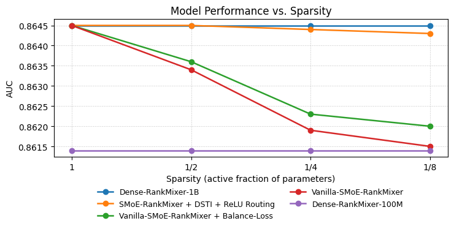
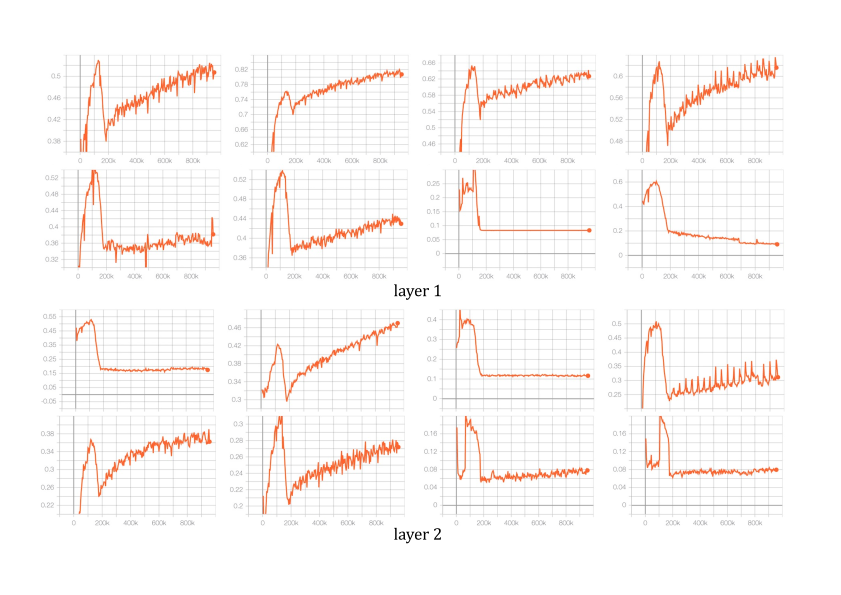

RankMixer：扩展
工业推荐系统中的排序模型
摘要
近期大语言模型（LLM）的进展激发了扩展推荐系统的兴趣，但仍存在两个实际障碍。第一，工业推荐系统上的训练和服务成本必须满足严格的延迟约束和高 QPS 需求。第二，排序模型中的大多数人工设计的特征交叉模块继承自 CPU 时代，无法利用现代 GPU，导致模型浮点运算利用率（MFU）低且可扩展性差。我们提出 RankMixer，一种面向统一且可扩展的特征交互架构的硬件感知模型设计。RankMixer 保留了 transformer 的高并行性，同时用多头词元混合模块替代二次复杂度自注意力以实现更高效率。此外，RankMixer 通过逐词元 FFN 同时保持对不同特征子空间的建模和跨特征空间交互。我们进一步将其扩展到十亿参数，并采用 Sparse-MoE 变体以获得更高 ROI。采用动态路由策略以解决专家训练不足和不平衡问题。实验表明 RankMixer 在万亿规模生产数据集上具有优越的扩展能力。通过用 RankMixer 替代先前多样化的手工设计低 MFU 模块，我们将模型 MFU 从 4.5% 提升至 45%，并将在线排序模型参数扩展两个数量级，同时保持大致相同的推理延迟。我们通过两个核心应用场景（推荐和广告）的在线 A/B 测试验证了 RankMixer 的通用性。最后，我们上线了 1B 稠密参数 RankMixer 进行全流量服务，且不增加服务成本，将用户活跃天数提升了 0.3%，将应用内总使用时长提升了 1.08%。
Corresponding authors.
1. 引言
推荐系统（RS）在信息分发过程中至关重要。作为一个重要的机器学习场景，RS 基于大量多字段特征数据预测用户对物品的行为，这些数据包括多样统计量等数值特征、用户和物品 ID 等类别特征、用户行为特征和内容特征 (Zhang et al., 2021; Lin et al., 2023)。最先进的推荐方法基于深度学习推荐模型（DLRM），其以神经网络作为特征嵌入之上的稠密交互层，灵活捕获特征交互。DLRM 中的稠密交互层对 RS 性能至关重要，已有多种模型结构被提出 (Covington et al., 2016; Zhou et al., 2018; Guo et al., 2017; Wang et al., 2021; Zhang et al., )。
受惠于参数增长的大语言模型（LLM）进展的推动 (Achiam et al., 2023; Kaplan et al., 2020; Hoffmann et al., 2022)，将 DLRM 扩展到充分利用数据规模是一项迫切需求。 先前研究已在 DLRM 扩展方面取得大量成果，早期研究 (Zhang et al., 2024; Ardalani et al., 2022; Chitlangia et al., 2023) 仅加宽或堆叠特征交互层而不修改结构。以这种方式获得的收益有限，偶尔甚至为负 (Wang et al., 2017; Lian et al., 2018)。随后，DHEN (Zhang et al., 2022) 和 Wukong (Zhang et al., ) 等后续工作专注于设计创新 DNN 结构以提升扩展性能。然而，利用模型规模提升推荐性能面临独特的实际挑战。与 NLP 或视觉任务不同，工业规模推荐系统必须严格遵守紧延迟约束并支持极高 QPS（每秒查询数）。因此，核心挑战在于找到平衡模型效果与计算效率的最佳点。
从历史上看，推荐中排序模型的架构一直受 CPU 时代设计原则塑造。这些模型通常依赖组合异构多样的手工设计交叉特征模块来提取特征交互，但其中许多核心算子在现代 GPU 上是内存受限而非计算受限，导致 GPU 并行性差且 MFU（模型浮点运算利用率）极低，通常处于个位数百分比范围。此外，由于 CPU 时代模型的计算成本大致与参数数量成正比，如缩放定律所暗示的那样通过激进扩展获得潜在 ROI 在实践中难以实现。
总之，DLRM 缩放定律研究必须克服以下问题：
-
•
架构应与硬件对齐，在现代 GPU 上最大化 MFU 和计算吞吐量。
-
•
模型设计必须利用推荐数据的特性，例如异构特征空间以及数百个字段之间的个性化跨特征交互。
为应对这些挑战，我们提出硬件感知模型设计方法 RankMixer。RankMixer 的核心设计基于两个可扩展组件：1。多头词元混合仅通过无参数算子实现跨词元特征交互。该策略在性能和计算效率上优于自注意力机制。2。逐词元前馈网络（FFN）显著扩展模型容量，并通过为不同特征子空间建模分配独立参数来解决特征空间间主导问题。这些 FFN 也与推荐数据模式良好对齐，从而实现更好的扩展行为。 为进一步提升大规模模型的 ROI，我们将逐词元 FFN 模块扩展为稀疏专家混合（MoE）结构。通过针对不同数据为每个词元动态激活仅一部分专家，我们能够以最小的计算成本增加显著提高模型容量。 RankMixer 采用类似 transformer 的高度并行架构，但克服了基于自注意力的特征交互的几个关键局限：训练效率低、建模跨空间 ID 相似度时的组合爆炸以及注意力权重矩阵导致的严重内存受限。同时，与 Vanilla Transformer 相比，RankMixer 在相同 Flops 下提供更大的模型容量和学习能力。
在抖音推荐系统的生产部署中，我们证明将模型参数扩展超过 100× 同时保持比先前基线更短的推理延迟是可行的。这得益于 RankMixer 架构能够将参数增长与 FLOPs 解耦，并通过高 MFU 和工程优化将 FLOPs 增长与实际成本解耦。
主要贡献可总结如下：
-
•
我们提出一种遵循硬件感知模型设计理念的新架构 RankMixer。我们设计多头词元混合和逐词元 FFN 策略以高效捕获异构特征交互，并使用动态路由策略提升 RankMixer 中 SparseMoE 的可扩展性。
-
•
利用高 MFU 和性能优化手段，我们在不增加推理成本的情况下将模型参数扩展 70×，包括提升 MFU 和量化。
-
•
我们进行了大量离线和在线实验，并在万亿规模工业推荐数据集上研究模型的缩放定律。RankMixer 模型已成功部署在抖音 Feed 推荐排序中进行全流量服务，在活跃天数和 App 时长上分别实现 0.3% 和 1.08% 的提升。
2. 相关工作
现代推荐系统基于深度推荐模型（DLRM），如何有效建模特征交互是 DLRM 的关键因素 (Cheng et al., 2016; Guo et al., 2017; Huang et al., 2022; Qu et al., 2018; Wang et al., 2024a, 2021; Zhang et al., 2022)。Wide&Deep (Cheng et al., 2016) 是最早的努力之一，它结合逻辑回归（wide 部分）和 DNN（deep 部分）以分别捕获低阶和高阶特征交互。DeepFM (Guo et al., 2017) 是另一项成果，它集成了因子分解机（FM）和 DNN。此外，DeepCross (Shan et al., 2016) 是残差网络 (He et al., 2016) 的扩展，旨在隐式学习自动特征交互。而仅依赖 DNN 学习高阶特征交互已被证明相当具有挑战性 (Qu et al., 2018; Rendle et al., 2020)。 显式交叉方法设计不同算子以显式捕获高阶特征交互，例如 PNN (Qu et al., 2018)、DCN (Wang et al., 2017) 及其后继 DCNv2 (Wang et al., 2021)、xDeepFM (Lian et al., 2018)、FGCNN (Liu et al., 2019) 和 FiGNN (Li et al., 2019)。AutoInt (Song et al., 2019) 和 Hiformer (Gui et al., 2023) 采用带残差连接的注意力机制学习复杂交互。DHEN (Zhang et al., 2022) 提出将多个交互算子组合在一起。尽管提高了准确性，这些新架构增加了模型延迟和内存消耗，且其模型规模相对较小。
缩放定律已成为深度学习的基本主题，也是过去十年众多突破的关键催化剂，尤其是在自然语言处理（NLP）(Kaplan et al., 2020; Hoffmann et al., 2022)、计算机视觉（CV）(Dosovitskiy, 2020; Zhai et al., 2022)和多模态建模 (Radford et al., 2021; Ramesh et al., 2021) 中，它们描述了模型性能与扩展因素（如模型规模、数据量和计算能力）之间的幂律相关性 (Kaplan et al., 2020; Achiam et al., 2023; Touvron et al., 2023; Team et al., 2024)。 最近，推荐系统中的缩放定律引起了研究者的广泛关注 (Guo et al., 2024)。研究探索了预训练用户活动序列 (Chitlangia et al., 2023)、通用用户表示 (Shin et al., 2023; Zhang et al., 2024) 和在线检索 (Fang et al., 2024; Wang et al., 2024b) 的扩展策略。Wukong (Zhang et al., ) 堆叠 FM 和 LCB 以学习特征交互。正交地，Zhang et al. (2024) 将序列推荐模型扩展到 0.8B 参数。HSTU (Zhai et al., ) 增强了更关注序列部分的生成式推荐器（GR）的扩展效果。
3. 方法

3.1. 整体架构
RankMixer 的整体架构由 T 个输入词元组成，经过 L 个连续的 RankMixer 块处理，随后是输出池化算子。每个 RankMixer 块有两个主要组件：(1) 多头词元混合层，和 (2) 逐词元前馈网络（PFFN）层，如图 1 所示。 首先，输入向量 被词元化为 个特征词元 ，每个表示一个连贯的特征向量。 RankMixer 块通过以下方式在 层中迭代细化词元表示：
| (1) |
其中 是层归一化函数， 和 分别是多头词元混合模块和逐词元 FFN 模块， 是第 个 RankMixer 块的输出， 由 堆叠而成， 是模型的隐藏维度。 输出表示 来自最终层表示 的平均池化，将用于计算不同任务的预测。
3.2. 输入层与特征词元化
构建大规模推荐模型的第一步是准备包含丰富信息的输入，例如用户特征包括用户 ID 和其他用户信息，候选特征包括视频 ID、作者 ID 等，序列特征通过序列模块 (Zhou et al., 2018; Chai et al., 2025) 处理以捕获时间兴趣，得到 和 交叉特征，即用户与候选之间的交叉特征。所有特征将被转换为不同维度的嵌入。
为使后续阶段能够高效并行计算，不同维度的嵌入必须转换为维度对齐的向量，称为特征词元。我们将此嵌入对齐过程称为词元化。最简单的策略是为每个特征分配一个嵌入，但考虑到通常有数百个特征，这会带来若干挑战。拥有数百个词元不可避免地会将分配给每个词元的参数和计算减少为小碎片，导致重要特征建模不足以及 GPU 核心利用率低下。相反，过少的词元（例如单个词元）会将模型结构退化为简单的深度神经网络（DNN），无法清晰地表示多样特征空间，存在主导特征掩盖其他特征的风险。
为克服这些问题，我们提出一种基于语义的词元化方法，借助领域知识将特征分组为若干语义连贯的簇。这些分组后的特征被依次拼接为一个嵌入向量，随后被划分为数量合适、维度固定的词元。每个特征词元捕获一组表示相似语义侧面的特征嵌入。
| (2) |
其中是拼接后的嵌入向量，是每个词元的固定维度，是特征组的数量，是得到的词元数量，而函数将切分后的嵌入映射到维。
3.3. RankMixer 模块
3.3.1. 多头词元混合
为促进词元之间有效的信息交换（这对特征交叉和全局信息建模很重要），我们引入多头词元混合模块。每个词元被均匀划分为个头，第个头（属于词元）记为：
| (3) |
由于推荐任务需要从不同视角进行考量，这些头可以被视为将词元投影到更低维的特征子空间。词元混合用于融合这些子空间向量，以实现全局特征交互。形式上，经过多头词元混合后，第个词元（对应第个头）构造为：
| (4) |
多头词元混合模块的输出为，它由所有打乱顺序的词元堆叠而成。在本工作中，我们设置，以在词元混合后保持词元数量不变，从而支持残差连接。
经过残差连接和归一化模块后，我们可以生成
| (5) |
尽管自注意力已被证明在大语言模型中非常有效，但我们发现它对推荐系统并非最优。在自注意力中，注意力权重通过词元的内积计算。该方法对NLP很有效，因为其中所有词元共享统一的嵌入空间。然而在推荐任务中，特征空间本质上是异质的。在两个异质语义空间之间计算内积相似度是众所周知的困难——尤其在推荐系统中，用户侧和物品侧特征的ID空间可能包含数亿个元素。因此，将自注意力应用于如此多样的输入并不能优于无参数的多头词元混合方法，并且会消耗更多计算、内存IO操作和GPU显存。
3.3.2. 逐词元FFN
以往的DLRM和DHEN模型倾向于在单个交互模块中混合来自许多不同语义空间的特征，这可能使高频字段占据主导地位，淹没低频或长尾信号，最终损害整体推荐质量。我们引入一种参数隔离的前馈网络架构，称为逐词元FFN。在传统设计中，FFN的参数在所有词元间共享，而我们的方法用专门的变换处理每个词元，从而为每个词元隔离参数。对于第个词元，逐词元FFN可以表示为
| (6) |
其中
| (7) |
是逐词元FFN的第层MLP，、、、、是用于调整逐词元FFN隐藏维度的超参数，是Gelu激活函数，是第个词元。
我们将逐词元FFN模块概括为
| (8) |
其中
| (9) |
与参数全部共享的FFN相比，逐词元FFN在保持计算复杂度不变的同时，通过引入更多参数增强了建模能力。
值得强调的是，逐词元FFN与MMoE专家不同之处在于，每个逐词元FFN看到的是不同的词元输入，而MMoE中的所有专家共享相同的输入。不同于许多专家处理同一输入的MMoE，也不同于不同输入共享一个FFN的Transformer，RankMixer同时切分输入和参数，这有利于在不同特征子空间中学习多样性。
3.4. RankMixer中的稀疏MoE
为进一步提高扩展的投资回报率，我们可以将每个逐词元的稠密FFN替换为稀疏混合专家（MoE）模块，使模型容量增长而计算成本大致保持不变。然而，原生稀疏MoE在RankMixer中会退化，原因在于：(i) 均匀的专家路由。Top-选择对所有特征词元一视同仁，将预算浪费在低信息量词元上，而使高信息量词元得不到足够资源，这阻碍了模型捕捉词元之间的差异。(ii) 专家训练不足。逐词元FFN已经将参数乘以词元数量；加入非共享专家会进一步使专家数量激增，产生高度不平衡的路由和训练不充分的专家；
我们结合两种互补的训练策略来解决上述问题。
ReLU 路由
为使词元拥有灵活的专家数量并保持可微性，我们将常用的替换为 ReLU 门控加上自适应惩罚(Wang et al., 2024c)。给定第个专家（对应词元）以及路由器：
| (10) |
其中是每个词元的专家数量，是词元数量。ReLU路由会为高信息量词元激活更多专家，从而提高参数效率。稀疏性由引导，其系数使平均激活专家比例保持在预算附近：
| (11) |
稠密训练/稀疏推理（DTSI-MoE）
受(Pan et al., 2024)启发，采用两个路由器和，并且仅应用于。训练期间和都会被更新，而推理时仅使用。结果表明，DS-MoE使专家不会遭受训练不足的问题，同时降低了推理成本。
3.5. 扩展方向
RankMixer本质上是一种高度并行且可扩展的架构。其参数数量和计算成本可以沿四个正交轴扩展：词元数量、模型宽度、层数和专家数量。对于全稠密激活版本，单个样本的参数和前向FLOPs可按如下方式计算
| (12) |
是用于调整FFN隐藏维度的缩放比例。在稀疏MoE版本中，每个词元的有效参数和计算量会进一步按稀疏比例缩放。
4. 实验
4.1. 实验设置
4.1.1. 数据集与环境
离线实验使用抖音推荐系统的训练数据进行。这些数据来自抖音的在线日志和用户反馈标签。训练数据集包含超过300个特征，如数值特征、ID特征、交叉特征和序列特征，涉及数十亿用户ID和数亿视频ID，这些特征均被转换为嵌入。数据每天覆盖数万亿条记录，实验在两周期间收集的数据上进行。
4.1.2. 评估指标
为评估模型性能，我们使用AUC（曲线下面积）和UAUC（用户级AUC）作为主要性能指标，并使用参数数量、FLOPs和MFU作为效率指标，具体如下：完播/跳过 AUC/UAUC：完播=1/0或跳过=1/0标签表示用户在短时间内是否完整观看视频或滑动到下一个视频。我们针对该完播标签评估AUC和UAUC。AUC提升0.0001可被视为具有置信度的显著提升。稠密参数：稠密部分的参数数量，不包括稀疏嵌入参数。训练Flops/Batch：让一个批次512通过模型所需的浮点运算次数（FLOPs），代表训练的计算成本。MFU：MFU（模型FLOPs利用率）是衡量模型对硬件提供的浮点运算利用程度的指标，通过将模型的实际FLOPs消耗除以硬件的理论FLOPs容量计算得到。
4.1.3. 基线
我们与以下被广泛认可的SOTA基线进行比较：DLRM-MLP：作为实验基线的用于特征交叉的原生MLP，DCNv2(Wang et al., 2021)、RDCN(Borisyuk et al., 2024)特征交叉模型的SOTA。MoE通过使用多个并行专家进行扩展。AutoInt(Song et al., 2019)、Hiformer(Gui et al., 2023)结合了异质自注意力层和低秩近似矩阵计算。DHEN(Zhang et al., 2022)：结合不同类型的特征交叉块并堆叠多层（DCN/自注意力/FM/LR）Wukong(Zhang et al., )遵循DHEN架构，并采用因子分解机块（FMB）和线性压缩块（LCB），研究了特征交互的缩放定律。
所有实验均在数百块GPU上以混合分布式训练框架进行：稀疏部分异步更新，而稠密部分同步更新。所有模型的优化器超参数保持一致。对于稠密部分，我们使用学习率为0.01的RMSProp优化器，而稀疏部分使用Adagrad优化器。
4.2. 与SOTA方法的比较
| Model | Finish | Skip | Efficiency | |||
| AUC | UAUC | AUC | UAUC | Params | FLOPs/Batch | |
| DLRM-MLP (base) | 0.8554 | 0.8270 | 0.8124 | 0.7294 | 8.7 M | 52 G |
| DLRM-MLP-100M | +0.15% | — | +0.15% | — | 95 M | 185 G |
| DCNv2 | +0.13% | +0.13% | +0.15% | +0.26% | 22 M | 170 G |
| RDCN | +0.09% | +0.12% | +0.10% | +0.22% | 22.6 M | 172 G |
| MoE | +0.09% | +0.12% | +0.08% | +0.21% | 47.6 M | 158 G |
| AutoInt | +0.10% | +0.14% | +0.12% | +0.23% | 19.2 M | 307 G |
| DHEN | +0.18% | +0.26% | +0.36% | +0.52% | 22 M | 158 G |
| HiFormer | +0.48% | — | — | — | 116 M | 326 G |
| Wukong | +0.29% | +0.29% | +0.49% | +0.65% | 122 M | 442 G |
| RankMixer-100M | +0.64% | +0.72% | +0.86% | +1.33% | 107 M | 233 G |
| RankMixer-1B | +0.95% | +1.22% | +1.25% | +1.82% | 1.1 B | 2.1T |
为探索如何扩展模型，我们比较了参数量相近（约100百万）的模型，以确定在相同计算成本下哪种模型结构表现最佳。
我们的方法与基线的主要性能结果总结在表1中。我们可以观察到，RankMixer在多个目标和指标上显著优于其他SOTA模型。
我们进一步仔细分析每个模型。首先，仅将DLRM扩展到100百万参数只能带来有限收益，这凸显了针对推荐数据特性设计模型以获得更好扩展性能的必要性。然后我们将RankMixer模型与其他经典交叉结构设计（如DCN、RDCN、AutoInt和DHEN）进行比较，发现它们存在模型参数与计算成本之间的不平衡。即使参数量相对较小，这些模型也已表现出较大的FLOPs，表明设计上的缺陷制约了它们在表中的结果。同时，尽管RankMixer取得了最佳性能，但在扩展到100百万参数时，其FLOPs在所有模型中仍相对适中，体现了在模型容量和计算负载之间的平衡。
我们还将RankMixer与几种常用的最先进扩展模型（如Hiformer和wukong）进行比较，发现在相近参数设置下，RankMixer不仅性能更好，而且计算需求更低。
4.3. 不同模型的缩放定律

在图2中，我们展示了从参数规模和Flops两方面观察到的缩放定律曲线。RankMixer模型在参数和FLOPs两方面均表现出最陡峭的缩放定律。RankMixer始终优于其他模型。
尽管wukong模型表现出相对陡峭的参数曲线，但其计算成本增长更为迅速；因此，在AUC vs FLOPs曲线上，它与RankMixer和hiformer之间的差距更大。此外，hiformer的性能略逊于RankMixer，反映其依赖特征级词元切分和注意力机制影响了效率。DHEN的扩展并不理想，反映其交叉结构的可扩展性有限。此外，MoE通过增加专家进行扩展的策略带来了维持专家平衡的挑战，导致扩展性能次优。
具体而言，我们可以通过增加宽度（）、特征词元（）和层数（）来扩展 RankMixer 模型。在我们的实验中，我们观察到一个与 LLM 缩放定律一致的结论：模型质量主要与参数总量相关，而不同的扩展方向（深度 L、宽度 D、词元数 T）会产生几乎相同的性能。从计算效率的角度来看，更大的隐藏维度会产生更大的矩阵乘法形状，因此相比堆叠更多层能实现更高的 MFU。因此，100M 和 1B 的最终配置分别设为（=768，=16，=2）和（=1536，=32，=2）。
4.4. 消融实验
| Setting | AUC |
| w/o skip connections | |
| w/o multi-head token mixing | |
| w/o layer normalization | |
| Per-token FFN shared FFN |
| Routing strategy | AUC | Params | FLOPs |
| All-Concat-MLP | 0.0% | 0.0% | |
| All-Share | 0.0% | 0.0% | |
| Self-Attention | +16% | +71.8% |
在 RankMixer-100M 模型中，我们对残差连接、多头词元混合进行了消融研究。从表 2 中可以看出，移除这些组件会显著降低模型性能。移除多头词元混合会丢失全局信息，因为每个 FFN 只对部分特征建模而缺乏交互。移除残差连接和 LayerNorm 同样会使性能变差，降低训练稳定性，并使梯度爆炸或消失问题更容易出现。
我们进一步分析了词元混合策略，即表 3 中从特征词元到 FFN 的路由策略。与多头词元混合（Multi-Head Token-Mixing）进行比较的路由策略包括：All-Concat-MLP： 将所有词元拼接，通过一个大 MLP 处理后再切分为相同数量的词元。性能的下降表明学习大矩阵存在挑战，且削弱了局部信息的学习。All-Share： 不做切分，整个输入向量被共享并馈入每个逐词元 FFN，类似于 MoE。性能显著下降，这表明与全共享输入相比，特征子空间划分和独立建模的重要性。 自注意力： 在词元之间应用自注意力进行路由。其性能略逊于多头词元混合，并且还承受较高的计算开销，这表明在数百个不同特征子空间之间学习相似性存在困难。
4.5. 稀疏 MoE 的可扩展性与专家均衡

可扩展性。
图 3 绘制了离线 AUC 增益随 SMoE 稀疏度的变化。将稠密训练-稀疏推理与 ReLU 路由相结合，对于在激进稀疏度下保持精度至关重要，使 RankMixer 能够将参数容量（和内存占用）扩展至超过 8 倍，而 AUC 几乎没有损失，并在推理时带来显著节省（吞吐量提升 50%）。原始 SMoE 的性能随着激活专家数量减少而单调下降，这印证了我们识别出的专家不均衡和训练不足问题。加入负载均衡损失可相对原始 SMoE 减轻性能退化，但仍不及 DTSI + ReLU 版本，因为问题主要出在专家训练而非路由器上。 这验证了稀疏 MoE 是将 RankMixer 从当前的 1 B 参数扩展到未来 10 B 规模部署而不超出成本预算的可行路径。

| Douyin app | Douyin lite | |||||||||
| Active Day | Duration | Like | Finish | Comment | Active Day | Duration | Like | Finish | Comment | |
| Overall | +0.2908% | +1.0836% | +2.3852% | +1.9874% | +0.7886% | +0.1968% | +0.9869% | +1.1318% | +2.0744% | +1.1338% |
| Low-active | +1.7412% | +3.6434% | +8.1641% | +4.5393% | +2.9368% | +0.5389% | +2.1831% | +4.4486% | +3.3958% | +0.9595% |
| Middle-active | +0.7081% | +1.5269% | +2.5823% | +2.5062% | +1.2266% | +0.4235% | +1.9011% | +1.7491% | +2.6568% | +0.6782% |
| High-active | +0.1445% | +0.6259% | +1.828% | +1.4939% | +0.4151% | +0.0929% | +1.1356% | +1.8212% | +1.7683% | +2.3683% |
| Advertising | ||
| Metric | AUC | ADVV |
| Lift | +0.73% | +3.90% |
| Metric | OnlineBase-16M | RankMixer-1B | Change |
| #Param | 15.8M | 1.1B | 70 |
| FLOPs | 107G | 2106G | 20.7 |
| Flops/Param(G/M) | 6.8 | 1.9 | 3.6 |
| MFU | 4.47% | 44.57% | 10 |
| Hardware FLOPs | fp32 | fp16 | 2 |
| Latency | 14.5ms | 14.3ms | - |
专家均衡与多样性。
原始稀疏 MoE 常常存在专家不均衡问题，进而使部分专家训练不足，最终导致“死亡专家”（几乎从不被激活的专家），而只有少数固定专家不断被激活。 图 4 显示，将 DTSI（稠密训练、稀疏推理）与 ReLU 路由相结合可有效解决该问题：稠密训练保证大多数专家获得充足的梯度更新，防止专家饥饿。 ReLU 路由使激活比例在不同词元之间动态变化——图中显示的激活比例根据其信息内容自适应变化，这与推荐数据多样且高度动态的分布很好地吻合。
4.6. 在线服务成本
当参数增加两个数量级时，我们如何防止推理延迟爆炸？在实际系统中，延迟与吞吐量成反比，与服务机器资源的成本成正比。 与我们之前完全部署的 16M 参数模型（其结构集成了 DLRM 和 DCN）相比，我们的 RankMixer 模型将参数量扩展约 70，达到 1B。尽管参数显著增加，由于我们对齐硬件的模型设计和优化策略，最终推理延迟保持稳定。
当大幅增加模型参数时，延迟可以分解为以下公式：
如表 6 所示，两个数量级的参数增长被逐步抵消：FLOPs/Param 比率下降 3.6，MFU 提升 10 ，以及基于量化的 2 硬件 FLOPs 提升。
-
(1)
FLOPs/Param 比率。 表 6 的第三行报告了每参数所需的浮点运算次数（FLOPs）。 得益于模型设计，RankMixer 在参数量增加 70 倍的情况下，FLOPs 仅增加约 20 倍，FLOPs/Param 比率仅为基线的三分之一——即 3.6, 的效率提升。换言之，在相同 FLOPs 预算下，RankMixer 可以容纳比基线多三倍的参数。
-
(2)
模型 FLOPs 利用率（MFU）。 同样如表 6 所示，MFU 表示机器算力的利用率。 通过使用大 GEMM 形状、良好的并行拓扑（将逐词元并行 FFN 融合为一个内核）、降低内存带宽成本和开销，RankMixer 将 MFU 提升近 10 ，使模型从内存受限转变为计算受限状态。
-
(3)
量化 半精度（fp16）推理将使 GPU 的理论峰值硬件 FLOPS 提升 2 。如前所述，RankMixer 中的主要计算由若干大型矩阵乘法构成，非常适合半精度（fp16）推理
4.7. 在线性能
为验证 RankMixer 作为可扩展推荐模型框架的普适性，我们在个性化排序的两个核心应用场景——信息流推荐和广告——中进行了在线实验，涵盖了个性化排序的主要用例。 对于每个场景，我们监控以下关键性能指标：
-
•
信息流推荐。 活跃天数是实验期间每用户的平均活跃天数，作为 DAU 增长的替代指标； 时长衡量在 App 上的累计停留时间； 完播/点赞/评论：用户的完播、点赞和评论总数。
-
•
广告。 我们报告模型质量指标（）和收入指标 ADVV（广告主价值）。
这些场景中之前的基线是 16M 参数模型，结合了 DLRM 和 DCN。我们用 RankMixer-1B 模型替换了稠密部分，AUC 提升了 0.7%。我们在信息流推荐和广告中开展了在线 A/B 测试实验。信息流推荐上 A/B 测试结果为期 8 个月的长期观察见表 4 11 1 该结果更新于七月 24 日（2025 年），因为长期实验表明增益尚未饱和。 广告的结果见表 5。
RankMixer 已在包括信息流推荐（RankMixer-1B）和广告（RankMixer-1B）在内的三个个性化排序应用中部署和评估。RankMixer 在所有关键业务指标上带来了统计显著的提升。我们还可以观察到，与其他活跃度用户群体相比，表 4 中低活跃用户的提升最大，活跃天数提升超过 1.7412%，这证明了模型强大的泛化能力。 这些结果表明，RankMixer 作为统一骨干能够可靠地泛化到不同应用场景。
5. 结论
在本文中，我们介绍了最新的 RankMixer 模型，它已完全部署在抖音信息流排序中。它结合了面向异构特征交互的模型设计和面向服务效率的高度可并行架构。实验已证明其优越的性能和陡峭的缩放定律。在抖音 App 上完全部署后，它在活跃天数和 App 时长上分别获得了 0.3% 和 1% 的提升。
参考文献
- Gpt-4 technical report. arXiv preprint arXiv:2303.08774. Cited by: §1, §2.
- Understanding scaling laws for recommendation models. arXiv preprint arXiv:2208.08489. Cited by: §1.
- LiRank: industrial large scale ranking models at linkedin. In Proceedings of the 30th ACM SIGKDD Conference on Knowledge Discovery and Data Mining, KDD 2024, Barcelona, Spain, August 25-29, 2024, pp. 4804–4815. Cited by: §4.1.3.
- LONGER: scaling up long sequence modeling in industrial recommenders. External Links: 2505.04421, Link Cited by: §3.2.
- Wide & deep learning for recommender systems. In Proceedings of the 1st workshop on deep learning for recommender systems, pp. 7–10. Cited by: §2.
- Scaling generative pre-training for user ad activity sequences. Cited by: §1, §2.
- Deep neural networks for youtube recommendations. In Proceedings of the 10th ACM conference on recommender systems, pp. 191–198. Cited by: §1.
- An image is worth 16x16 words: transformers for image recognition at scale. arXiv preprint arXiv:2010.11929. Cited by: §2.
- Scaling laws for dense retrieval. In Proceedings of the 47th International ACM SIGIR Conference on Research and Development in Information Retrieval, pp. 1339–1349. Cited by: §2.
- Hiformer: heterogeneous feature interactions learning with transformers for recommender systems. arXiv preprint arXiv:2311.05884. Cited by: §2, §4.1.3.
- DeepFM: a factorization-machine based neural network for ctr prediction. arXiv preprint arXiv:1703.04247. Cited by: §1, §2.
- Scaling new frontiers: insights into large recommendation models. arXiv preprint arXiv:2412.00714. Cited by: §2.
- Deep residual learning for image recognition. In Proceedings of the IEEE conference on computer vision and pattern recognition, pp. 770–778. Cited by: §2.
- Training compute-optimal large language models. arXiv preprint arXiv:2203.15556. Cited by: §1, §2.
- Neural statistics for click-through rate prediction. In Proceedings of the 45th International ACM SIGIR Conference on Research and Development in Information Retrieval, pp. 1849–1853. Cited by: §2.
- Scaling laws for neural language models. arXiv preprint arXiv:2001.08361. Cited by: §1, §2.
- Fi-gnn: modeling feature interactions via graph neural networks for ctr prediction. In Proceedings of the 28th ACM international conference on information and knowledge management, pp. 539–548. Cited by: §2.
- Xdeepfm: combining explicit and implicit feature interactions for recommender systems. In Proceedings of the 24th ACM SIGKDD international conference on knowledge discovery & data mining, pp. 1754–1763. Cited by: §1, §2.
- How can recommender systems benefit from large language models: a survey. ACM Transactions on Information Systems. Cited by: §1.
- Feature generation by convolutional neural network for click-through rate prediction. In The World Wide Web Conference, pp. 1119–1129. Cited by: §2.
- Ads recommendation in a collapsed and entangled world. In Proceedings of the 30th ACM SIGKDD Conference on Knowledge Discovery and Data Mining, pp. 5566–5577. Cited by: §3.4.
- Product-based neural networks for user response prediction over multi-field categorical data. ACM Transactions on Information Systems (TOIS) 37 (1), pp. 1–35. Cited by: §2.
- Learning transferable visual models from natural language supervision. In International conference on machine learning, pp. 8748–8763. Cited by: §2.
- Zero-shot text-to-image generation. In International conference on machine learning, pp. 8821–8831. Cited by: §2.
- Neural collaborative filtering vs. matrix factorization revisited. In Proceedings of the 14th ACM Conference on Recommender Systems, pp. 240–248. Cited by: §2.
- Deep crossing: web-scale modeling without manually crafted combinatorial features. In Proceedings of the 22nd ACM SIGKDD international conference on knowledge discovery and data mining, pp. 255–262. Cited by: §2.
- Scaling law for recommendation models: towards general-purpose user representations. In Proceedings of the AAAI Conference on Artificial Intelligence, Vol. 37, pp. 4596–4604. Cited by: §2.
- Autoint: automatic feature interaction learning via self-attentive neural networks. In Proceedings of the 28th ACM international conference on information and knowledge management, pp. 1161–1170. Cited by: §2, §4.1.3.
- Gemma: open models based on gemini research and technology. arXiv preprint arXiv:2403.08295. Cited by: §2.
- Llama 2: open foundation and fine-tuned chat models. arXiv preprint arXiv:2307.09288. Cited by: §2.
- FLIP: fine-grained alignment between id-based models and pretrained language models for ctr prediction. In Proceedings of the 18th ACM Conference on Recommender Systems, pp. 94–104. Cited by: §2.
- Deep & cross network for ad click predictions. In Proceedings of the ADKDD’17, pp. 1–7. Cited by: §1, §2.
- Dcn v2: improved deep & cross network and practical lessons for web-scale learning to rank systems. In Proceedings of the web conference 2021, pp. 1785–1797. Cited by: §1, §2, §4.1.3.
- Scaling laws for online advertisement retrieval. arXiv preprint arXiv:2411.13322. Cited by: §2.
- ReMoE: fully differentiable mixture-of-experts with relu routing. CoRR abs/2412.14711. External Links: Link, Document, 2412.14711 Cited by: §3.4.
- [36] Actions speak louder than words: trillion-parameter sequential transducers for generative recommendations. In Forty-first International Conference on Machine Learning, Cited by: §2.
- Scaling vision transformers. In Proceedings of the IEEE/CVF conference on computer vision and pattern recognition, pp. 12104–12113. Cited by: §2.
- [38] Wukong: towards a scaling law for large-scale recommendation. In Forty-first International Conference on Machine Learning, Cited by: §1, §1, §2, §4.1.3.
- DHEN: a deep and hierarchical ensemble network for large-scale click-through rate prediction. arXiv preprint arXiv:2203.11014. Cited by: §1, §2, §4.1.3.
- Scaling law of large sequential recommendation models. In Proceedings of the 18th ACM Conference on Recommender Systems, pp. 444–453. Cited by: §1, §2.
- Deep learning for click-through rate estimation. arXiv preprint arXiv:2104.10584. Cited by: §1.
- Deep interest network for click-through rate prediction. In Proceedings of the 24th ACM SIGKDD International Conference on Knowledge Discovery & Data Mining, KDD ’18, New York, NY, USA, pp. 1059–1068. External Links: ISBN 9781450355520, Link, Document Cited by: §1, §3.2.